I have been watching K-dramas for more than ten years. Long before I could explain Korean grammar properly, certain reactions, sentence endings, and speech patterns already sounded familiar because I had heard them hundreds of times in dramas.
I later passed TOPIK Level 6. I would not say K-dramas got me there on their own—I also studied grammar, vocabulary, reading, and listening—but they became one of my favorite forms of Korean immersion. Once I started using Korean subtitles and transcripts, replaying scenes, shadowing short sections, and paying attention to who was speaking to whom, watching dramas became much more useful as study time. I also use Korean YouTube channels for shorter lessons, interviews, and native content between longer drama sessions.
That last part matters a lot in Korean. The same idea can sound completely different between friends, coworkers, strangers, and family members. So this list is not simply a ranking of famous Korean dramas. I picked each show based on what kind of Korean you hear, how reusable it is, and what the drama can teach you at different stages.
This post contains affiliate links. I may earn a small commission at no extra cost to you if you sign up through one of them.
✨ Key Takeaways
- 🌿 Modern slice-of-life and romance dramas usually give you the most reusable everyday Korean.
- 💼 Hometown Cha-Cha-Cha is my top overall pick for daily conversation, while Misaeng is stronger for real workplace Korean.
- 🎧 Advanced dramas like Goblin and Crash Landing on You are excellent listening material, but not everything you hear should become everyday speaking vocabulary.
One rule I use throughout this guide is simple: learn to separate Korean worth understanding from Korean worth imitating. A beautiful historical expression, legal term, or North Korean speech pattern can be worth understanding without becoming something you need to use yourself.
Best K-Dramas to Learn Korean: Quick Comparison
The levels below show when I think each drama becomes most useful as study material, not the minimum Korean level required to enjoy it. Learning Value rates each drama as Korean study material, not as a TV show.
| K-Drama | Level | Best For | Speed | Main Challenge | Learning Value |
|---|---|---|---|---|---|
| Hometown Cha-Cha-Cha | Beginner | Everyday Korean | Slow–Medium | Fast village group scenes | ★★★★★ |
| Yumi’s Cells | Beginner | Simple daily conversation | Slow | Animated narration | ★★★★☆ |
| Our Beloved Summer | Beginner | Relationship Korean | Medium | Faster arguments | ★★★★☆ |
| Business Proposal | Beginner–Intermediate | Workplace + romance | Medium | Exaggerated comedy | ★★★★★ |
| King the Land | Beginner–Intermediate | Service Korean | Medium | Hotel vocabulary | ★★★★☆ |
| Weightlifting Fairy Kim Bok-joo | Beginner–Intermediate | Campus Korean | Medium | Sports + fast banter | ★★★★☆ |
| Because This Is My First Life | Beginner–Intermediate | Adult daily life | Medium | Housing and contract terms | ★★★★☆ |
| Extraordinary Attorney Woo | Intermediate | Formal Korean | Clear–Medium | Legal vocabulary | ★★★★☆ |
| Hospital Playlist | Intermediate | Friends + workplace | Medium–Fast | Medical vocabulary | ★★★★★ |
| Misaeng | Intermediate | Real workplace Korean | Medium | Corporate jargon | ★★★★★ |
| Hello, My Twenties! (Age of Youth) | Intermediate | Friends + roommates | Medium–Fast | Overlapping speech | ★★★★★ |
| Reply 1988 | Intermediate | Family Korean | Medium–Fast | 1980s context + some dialect | ★★★★★ |
| Twenty Five Twenty One | Intermediate | Youth Korean | Medium–Fast | Fencing vocabulary | ★★★★☆ |
| My Liberation Notes | Intermediate | Emotional adult Korean | Slow–Medium | Indirect meaning | ★★★★☆ |
| My Mister | Intermediate–Advanced | Subtle adult Korean | Slow–Medium | Heavy subtext | ★★★★☆ |
| Goblin | Advanced | Emotional Korean | Medium | Poetic + fantasy language | ★★★☆☆ |
| Signal | Advanced | Crime Korean | Fast | Investigation terms | ★★★☆☆ |
| Crash Landing on You | Advanced | Dialect awareness | Medium–Fast | North Korean speech | ★★★☆☆ |
| Vincenzo | Advanced | Legal + crime Korean | Fast | Specialized vocabulary | ★★★☆☆ |
| Mr. Sunshine | Advanced | Historical Korean | Medium | Historical register | ★★☆☆☆ |
🌱 Best K-Dramas for Korean Beginners
I use “beginner” loosely here. These dramas are still made for native Korean speakers, so you will probably need subtitles. What makes them beginner-friendly is the amount of familiar context, everyday vocabulary, and reusable Korean.
1. Hometown Cha-Cha-Cha — Best for Everyday Korean

Learning Value: ★★★★★
A dentist from Seoul moves to a seaside village and opens her own clinic, where she meets Hong Du-sik, the unofficial problem-solver who somehow seems to have a job for every situation. The romance is only part of the story. Much of the drama is simply about people living together in a small community: visiting the dentist, running cafés and shops, eating together, gossiping, arguing, helping each other, dealing with family, and falling in love.
That range of ordinary situations is exactly what makes Hometown Cha-Cha-Cha one of my favorite dramas for everyday Korean. You hear professional-to-customer speech, younger people talking to older neighbors, casual conversations between friends, and relationship language as characters become closer. It is a good drama for noticing how politeness changes with social distance, rather than just memorizing what an individual sentence means.
🎧 Best scenes to study: Start with quiet one-to-one conversations. Clinic scenes are useful for polite Korean, while conversations between close characters are better for casual speech.
⚠️ Watch out for: Village gatherings can become much faster because several people talk and react at once. Focus first on verbs, expressions, and collocations that repeat across ordinary situations.
2. Yumi’s Cells — Best for Simple Daily Conversations
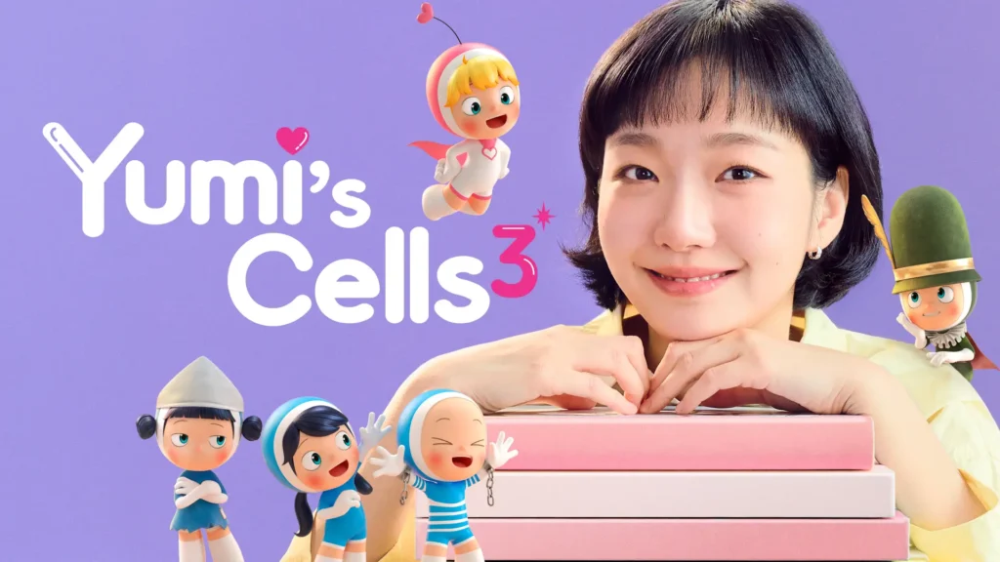
Learning Value: ★★★★☆
Across three seasons, Yumi’s Cells follows Yumi through work, dating, friendships, and different stages of her emotional life. Her thoughts and feelings are represented by tiny animated “cells,” which makes the story easier to follow even when you miss part of the Korean.
The real-world scenes are especially useful because so many situations are familiar: people date, text, eat, work, feel awkward, get jealous, overthink, and try to understand each other. That visual context helps you connect Korean directly with a situation instead of translating every sentence into English first. It is a good choice for daily conversation, dating language, emotional vocabulary, and office small talk.
🎧 Best scenes to study: Dates, short office exchanges, and quiet one-to-one conversations are the easiest places to start. Across the seasons, you can also hear how Yumi’s relationships and everyday situations change, which gives you more variety than a single-season drama.
⚠️ Watch out for: The animated cell sequences sometimes use more exaggerated narration, so I would use the real-world conversations for shadowing and the cell scenes mainly for listening and comprehension.
3. Our Beloved Summer — Best for Natural Relationship Korean

Learning Value: ★★★★☆
Two former high-school lovers are pulled back into each other’s lives years after breaking up when an old documentary they filmed together becomes popular again. What follows is a lot of awkwardness, teasing, resentment, affection, and conversations between two people who know each other almost too well.
That makes Our Beloved Summer especially useful for relationship Korean. You hear exes, friends, family members, coworkers, and professional contacts speaking in different ways, but the vocabulary itself is often quite ordinary. The interesting part is the tone. A simple question can sound caring, annoyed, embarrassed, or hurt depending on the scene, which is something textbooks rarely teach well.
🎧 Best scenes to study: Quiet conversations between Ung and Yeon-su give you enough time to hear sentence endings and emotional tone clearly.
⚠️ Watch out for: Arguments become much faster. Simple vocabulary does not always mean simple listening.
🌿 Best K-Dramas for Beginner–Intermediate Learners
At this level, I would stop focusing only on vocabulary and start asking questions like: Would I say this to a friend? Would I say it to my boss? Why did this character suddenly become more polite? That is where drama immersion becomes much more useful.
4. Business Proposal — Best for Easy Workplace Korean
Learning Value: ★★★★★
Ha-ri agrees to go on a blind date while pretending to be her friend, only to discover that the man sitting across from her is the CEO of her own company. From there, the story moves constantly between work, friendship, dating, and family.
That mixture makes the drama surprisingly useful for learners. Office scenes expose you to more formal Korean, friendship scenes give you casual language, and dating scenes add another layer of politeness and emotional expression. You can compare these registers without spending the entire drama inside technical business meetings.
🎧 Best scenes to study: Employee-manager conversations and quieter office scenes, followed by scenes between close friends for comparison.
⚠️ Watch out for: Rom-com misunderstandings create intentionally exaggerated reactions. They are fun to understand, but you do not need to imitate all of them.
5. King the Land — Best for Service and Hospitality Korean
Learning Value: ★★★★☆
The story follows a hotel employee known for her professional customer-service smile and the wealthy heir to the hotel company. Because so much of the story takes place in a luxury hotel, the drama naturally contains a lot of polite service Korean.
Guests need help, employees apologize, managers give instructions, and workers report problems. That means you hear honorific structures repeatedly in real situations rather than seeing them once in a grammar lesson. Listen especially for patterns such as -시-, -드리다, formal apologies, polite questions, and workplace acknowledgements.
🎧 Best scenes to study: Customer-service interactions are especially useful when you want clear and polite Korean.
⚠️ Watch out for: Hospitality Korean can be more formal than ordinary daily conversation, so always keep the setting in mind.
6. Weightlifting Fairy Kim Bok-joo — Best for Campus Korean
Learning Value: ★★★★☆
Bok-joo is a university weightlifter balancing training, friendship, food, crushes, and the awkwardness of becoming an adult. A lot of the drama takes place around classmates and teammates, which means plenty of casual speech.
The vocabulary itself is often not difficult. What makes the drama useful is hearing how young friends actually talk: they shorten things, interrupt, tease each other, and assume everyone already understands the context. It feels much closer to natural conversation than textbook dialogue.
🎧 Best scenes to study: Start with two-person conversations before moving into faster friend-group scenes.
⚠️ Watch out for: Sports vocabulary can quickly take over your notes. Unless you need it, focus on the language around the specialist terms.
7. Because This Is My First Life — Best for Adult Everyday Korean
Learning Value: ★★★★☆
A woman struggling with money becomes housemates with a man who owns a home but has financial pressures of his own. Their practical arrangement eventually becomes much more complicated, and the drama explores rent, work, money, relationships, marriage, parents, and what adulthood is supposed to look like.
I like this one because beginner material often teaches you how to order coffee but much less about housing, splitting costs, work stress, family pressure, relationships, and personal boundaries. The dialogue is also often calmer than in fast rom-coms, which makes it easier to hear complete sentences.
🎧 Best scenes to study: Roommate conversations and quieter relationship scenes.
⚠️ Watch out for: Contract and housing vocabulary appears fairly often. Learn it if it is useful to you; otherwise, keep your attention on the grammar around it.
🌳 Best K-Dramas for Intermediate Korean Learners
This is where K-dramas become really interesting as study material. You already know enough Korean to stop translating every sentence, so you can pay more attention to register, tone, implication, speed, and relationships.
8. Extraordinary Attorney Woo — Best for Clear Formal Korean
Learning Value: ★★★★☆
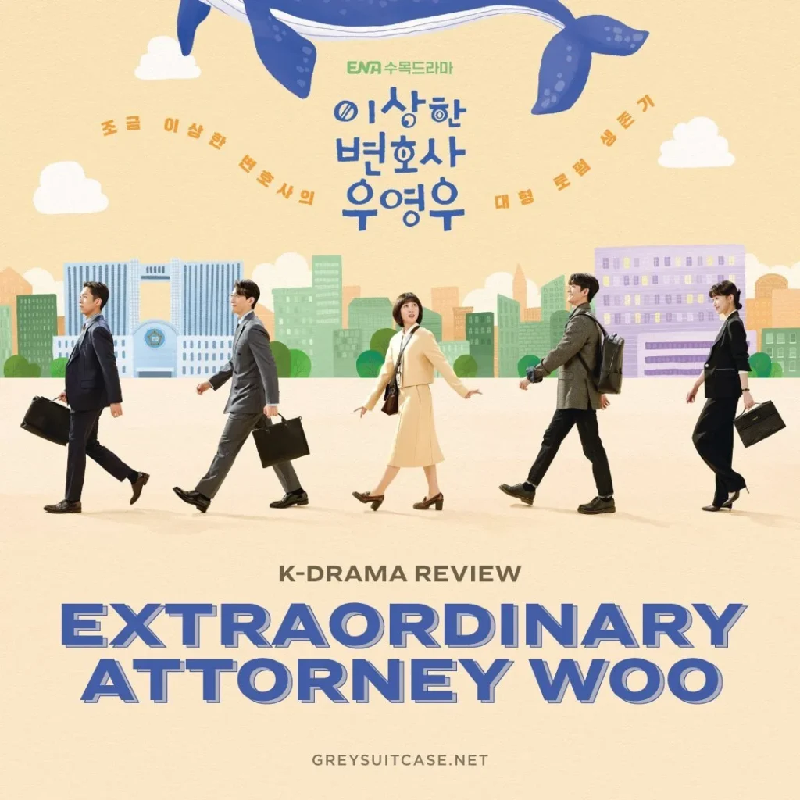
Woo Young-woo joins a major law firm as a new attorney, and each case introduces new clients, coworkers, legal problems, and professional situations. The pronunciation can feel surprisingly clear, but the vocabulary is another story.
This drama demonstrates an important point: clear Korean is not always easy Korean. You may hear every syllable correctly and still not understand the legal term being used. That makes the office and social scenes especially useful, because they give you longer stretches of professional polite Korean without every conversation turning into fast casual slang.
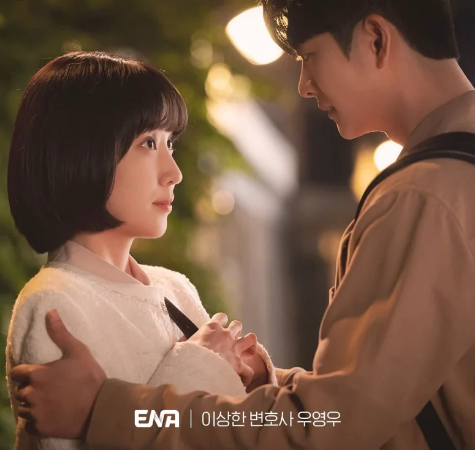
🎧 Best scenes to study: Coworker conversations and office meetings. Use courtroom scenes when you want a harder comprehension challenge.
⚠️ Watch out for: Do not turn your vocabulary deck into a Korean law dictionary.
9. Hospital Playlist — Best for Register Switching
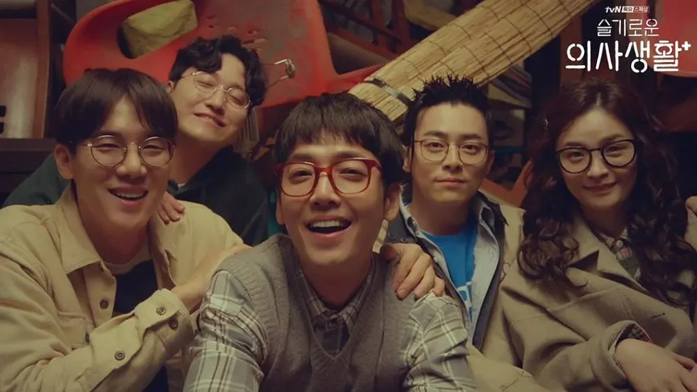
Learning Value: ★★★★★
Five doctors who have been close friends since medical school work together at the same hospital while dealing with patients, coworkers, family, relationships, and their own long friendship. They also spend a lot of time eating together, chatting, teasing each other, and playing music, which gives the drama plenty of relaxed conversation outside the medical setting.
I really like the director’s style here because everything feels unusually lived-in and natural. Even the casting has that quality: the characters rarely feel like actors delivering polished drama dialogue. Lee Ik-jun, in particular, feels so effortless that at times he almost seems like an extension of Jo Jung-suk himself. That naturalness is a big reason I think the drama works so well for Korean learners—you hear the kind of jokes, reactions, interruptions, and casual exchanges that make a friend group feel real.
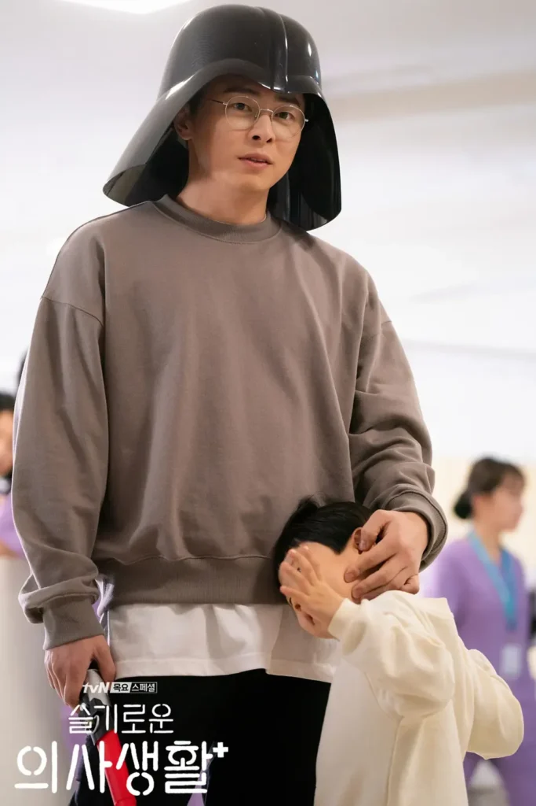
The biggest learning value comes from register switching. One character may move from doctor-to-patient speech to senior-to-junior workplace language and then to casual conversation with a lifelong friend within a few minutes. You can hear the Korean change immediately as the relationship changes.
For learning, I would completely ignore most of the medical terminology unless you actually need it. The real gold is in the everyday conversations between friends: meals, hallway chats, teasing, checking in on each other, and all the small reactions that repeat across normal life. Those scenes can give you a lot of useful vocabulary and natural phrasing.
🎧 Best scenes to study: Meals between the five friends, quiet hallway conversations, and one-to-one scenes outside the more technical medical moments.
⚠️ Watch out for: Medical vocabulary can make an otherwise simple sentence look intimidating. Skip the specialist nouns first and listen to the grammar, reactions, and relationship language around them.
🎵 Also worth mentioning: The soundtrack is excellent. The band scenes are part of the charm of the series, and if you already like Korean music, the OST gives you one more reason to keep coming back to the drama.
10. Misaeng — Best for Real Workplace Korean
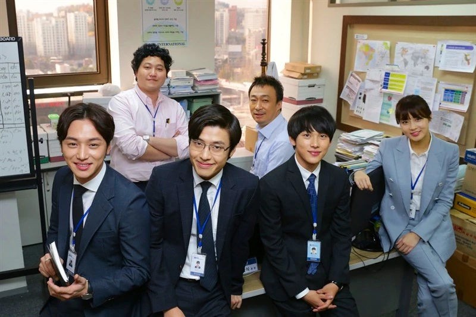
Learning Value: ★★★★★
Jang Geu-rae enters a trading company as an intern with almost no conventional corporate background. He suddenly has to survive managers, coworkers, clients, meetings, deadlines, office politics, and all the rules nobody explains directly.
If your goal is Korean for work, Misaeng is one of my strongest recommendations. You constantly hear intern-to-senior, employee-to-manager, coworker-to-coworker, and company-to-client interactions. That means you are not only learning office vocabulary—you are hearing how Korean changes when hierarchy changes.
Pay attention to how characters report progress, confirm instructions, ask permission, disagree carefully, apologize, talk to clients, and speak upward in the hierarchy. A sentence can be completely grammatical and still sound strange if you copy it from the wrong person.
🎧 Best scenes to study: Small meetings, short reports, and employee-manager conversations are much easier to reuse than dense corporate discussions.
⚠️ Watch out for: Corporate jargon. Do not let one unfamiliar business term hide a grammar pattern you already know.
11. Hello, My Twenties! (Age of Youth) — Best for Friend and Roommate Korean
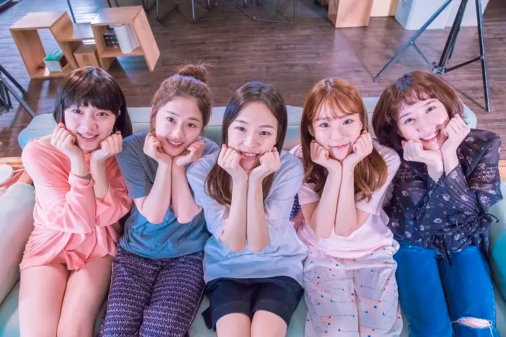
Learning Value: ★★★★★
I started Hello, My Twenties! after finishing Extraordinary Attorney Woo because I wanted to watch more of Park Eun-bin. I really like her acting style—her pronunciation is clear, but her delivery still feels very natural.
What I love most is how accurately the drama captures shared university life. Someone eats another person’s food, borrows clothes, talks too loudly on the phone, or keeps everyone awake. These tiny conflicts feel very real.
One scene stayed with me because the characters realize they had all been thinking the same thing: I thought I was the only one putting up with things. I thought I was the only one feeling uncomfortable. Everyone feels wronged in their own way, but keeping everything inside only makes it worse.
That is also why the Korean is useful. You hear natural language for complaining, explaining yourself, apologizing, checking on friends, and finally saying what has been bothering you.
🎧 Best scenes to study: Roommate conversations, especially small conflicts about food, privacy, noise, and daily routines.
⚠️ Watch out for: Group scenes overlap a lot, so start with two-person conversations first.
12. Reply 1988 — Best for Family Korean
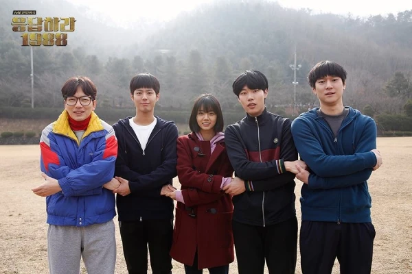
Learning Value: ★★★★★
Five families live on the same street in Seoul in the late 1980s. Their children grow up together, parents know everyone’s business, siblings fight, neighbors walk into one another’s homes, and people are constantly eating together. It feels like one huge Korean family conversation.
That gives you language across generations: parent-to-child, child-to-parent, sibling-to-sibling, teenager-to-teenager, and neighbor-to-neighbor. Family relationships create some of the most interesting register differences in Korean, which is why I rate this drama so highly as listening material.
🎧 Best scenes to study: Start with quieter two-person family scenes before attempting chaotic dinner-table conversations.
⚠️ Watch out for: The drama is set in the 1980s, so some cultural references and regional speech are less useful for modern daily conversation.
13. Twenty Five Twenty One — Best for Youth Korean
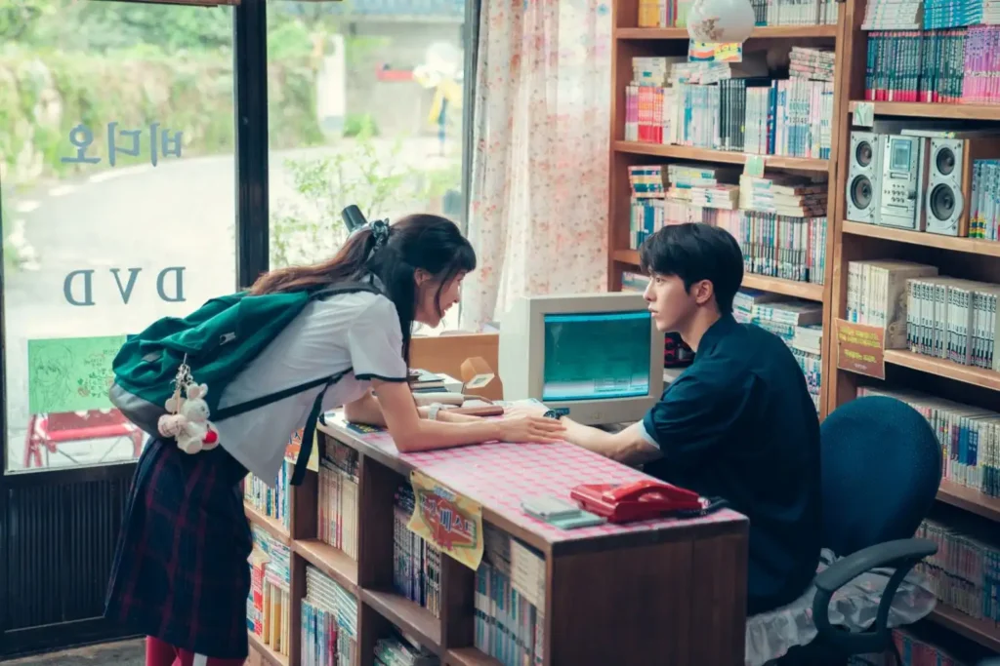
Learning Value: ★★★★☆
A teenage fencer tries to protect her dream during a difficult period in South Korea and meets a young man whose own future has been disrupted. The story follows friendship, ambition, competition, first love, disappointment, and growing up.
The dialogue often has a lot of energy, so you hear plenty of encouragement, friendship, arguments, motivation, disappointment, and casual youth speech. Sports scenes also provide strong visual context, which helps when you miss part of the Korean.
🎧 Best scenes to study: Friendship scenes and conversations away from competitions.
⚠️ Watch out for: Separate fencing vocabulary from general encouragement and reaction language you could use anywhere.
14. My Liberation Notes — Best for Quiet Emotional Korean
Learning Value: ★★★★☆
Three adult siblings live outside Seoul and spend huge amounts of time commuting to work, with each of them feeling stuck in a different way. The drama follows ordinary routines, family tension, work, loneliness, relationships, and the desire for a different life.
The show is very quiet, but that does not make the Korean easy. Some of the vocabulary is simple while the meaning is not. Characters leave things unsaid, so you need tone, silence, context, and earlier conversations to understand what a sentence really means.
🎧 Best scenes to study: Quiet workplace conversations and one-to-one scenes.
⚠️ Watch out for: Slow speech does not equal easy Korean. Subtext can be harder than speed.
15. My Mister — Best for Subtle Adult Korean

Learning Value: ★★★★☆
A middle-aged engineer carrying pressure from work and family becomes connected to a much younger temporary employee struggling with problems of her own. The story is full of office life, family tension, friendship, exhaustion, and restrained emotion.
This becomes useful once you can understand the grammar but still wonder, “Why did that simple sentence feel so heavy?” Tone matters. What happened before matters. Silence matters. It is a good drama for moving beyond literal meaning and becoming more sensitive to implication.
🎧 Best scenes to study: Quiet conversations between two people, with enough context to understand what is not being said.
⚠️ Watch out for: The emotional tone is heavy, so choose scenes you genuinely want to replay.
🌙 Best K-Dramas for Advanced Korean Learners
Advanced immersion does not have to mean, “I want to speak exactly like this character.” Sometimes the goal is simply, “I want to understand a wider range of Korean.“
16. Guardian: The Lonely and Great God (Goblin) — Best for Emotional and Memorable Korean
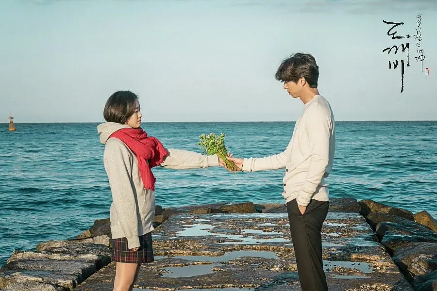
Learning Value: ★★★☆☆
An immortal goblin has spent centuries waiting for the person who can finally end his immortality. Then he meets a young woman who may be exactly that person. The story moves between romance, comedy, fantasy, tragedy, and highly emotional dialogue.
This drama is also very personal to me. I started taking Korean much more seriously around the time I was watching Goblin and becoming a fan of Gong Yoo. When you genuinely love something, you naturally rewatch scenes, look up interviews, search for meanings, and actively try to understand more without anyone forcing you to study.
That is still one of the biggest lessons I have taken from language learning: interest makes repetition feel effortless. Seeing the cast reunite for the drama’s 10th anniversary made me realize how much this series has stayed with me. Even after all these years, Goblin still feels like a genuinely special drama.
For Korean learners, some conversations are completely modern and casual, while others are much more literary, dramatic, or fantasy-specific. That contrast makes it especially interesting for advanced learners and perfectly illustrates one of my favorite rules: understand more than you imitate.
🎧 Best scenes to study: Modern conversations and casual banter are best for active learning. Use the most dramatic scenes for listening and language appreciation.
⚠️ Watch out for: Poetic language and fantasy vocabulary may be memorable without being practical, and that is completely fine.
17. Signal — Best for Crime and Investigation Korean
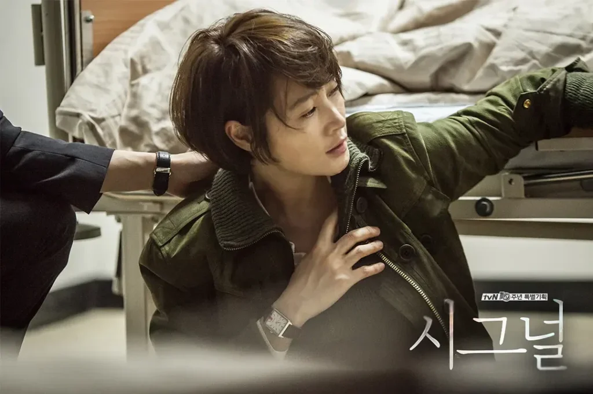
Learning Value: ★★★☆☆
A criminal profiler discovers a mysterious radio that allows him to communicate with a detective living in another time. Together, they investigate cold cases while events in the past and present begin affecting one another.
The language reflects that urgency. You hear police reporting, questioning, urgent instructions, investigation vocabulary, and formal professional Korean, often at a much faster pace than in slice-of-life dramas.
🎧 Best scenes to study: Start with shorter professional conversations before moving to the most intense investigation scenes.
⚠️ Watch out for: A large amount of vocabulary is crime-specific. Focus on general sentence patterns rather than memorizing everything.
18. Crash Landing on You — Best for Dialect Awareness
Learning Value: ★★★☆☆
A South Korean businesswoman accidentally lands in North Korea after a paragliding accident and meets a North Korean army officer who decides to protect her. That premise makes language part of the story itself because South Korean and North Korean speech appear side by side.
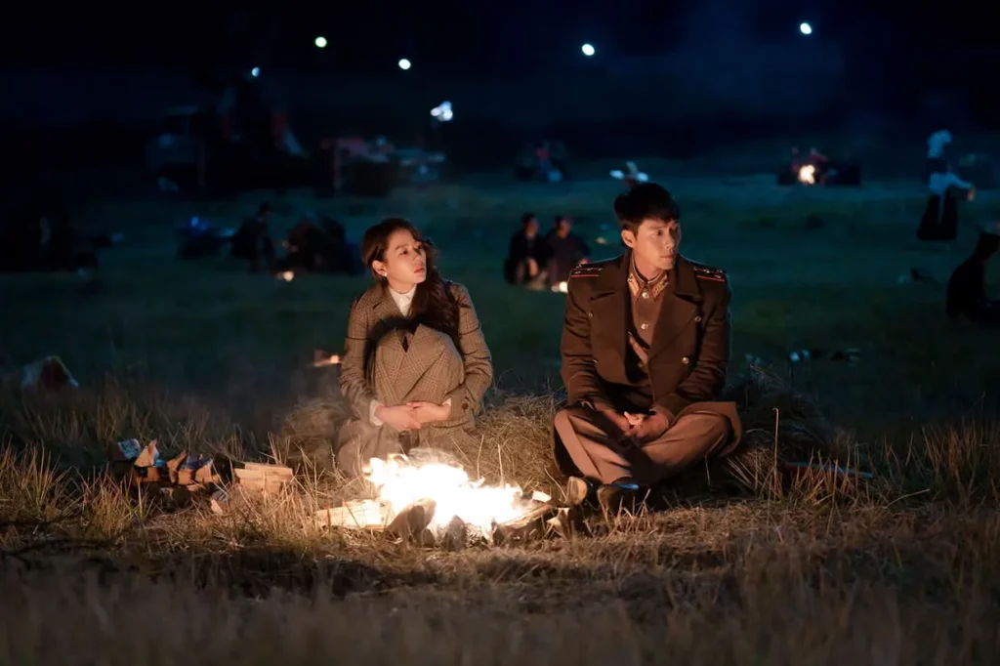
Once your standard Korean is stable, this becomes fascinating. You can begin noticing unfamiliar endings, vocabulary differences, pronunciation differences, accents, and speech patterns that do not sound exactly like textbook Seoul Korean. That kind of comparison is useful advanced listening practice.
🎧 Best way to study it: Use standard South Korean scenes for active shadowing and clearly North Korean scenes mainly for recognition and comparison.
⚠️ Watch out for: Understanding a language variety is different from adopting it. You do not need to copy every expression you understand.
19. Vincenzo — Best for Legal and Confrontational Korean
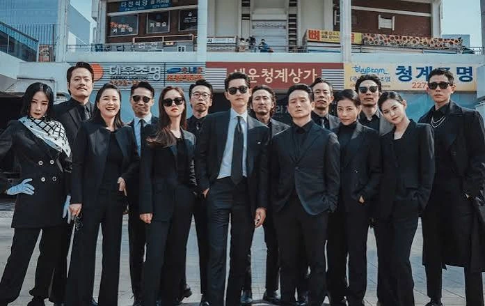
Learning Value: ★★★☆☆
A Korean-Italian mafia lawyer returns to Seoul and becomes involved in a fight against a powerful and corrupt company. The story mixes law, corporate politics, crime, threats, negotiations, sarcasm, and comedy, so the Korean is just as varied.
Advanced learners get exposure to formal arguments, confrontational speech, negotiation, legal vocabulary, sarcasm, and fast emotional reactions. It is good listening practice once ordinary daily conversation already feels comfortable.
🎧 Best scenes to study: Calmer professional conversations and negotiations.
⚠️ Watch out for: The coolest sentence in an episode is not always the most useful one. Keep the transferable language and leave highly specialized terminology for recognition.
20. Mr. Sunshine — Best for Historical Korean Awareness
Learning Value: ★★☆☆☆

Set during a period of major political and social change in Korea, Mr. Sunshine follows characters from very different backgrounds whose lives become connected through love, class, conflict, and history.
It is beautiful, but it is also one of the last dramas on this list I would choose for everyday conversational Korean. Its value for advanced learners lies in exposure to historical register, formal language, titles and forms of address, older social relationships, and unfamiliar sentence endings.
⚠️ Watch out for: Do not treat historical dialogue as a model for ordinary modern conversation. Understanding it is the goal.
🎬 How I Actually Use K-Dramas to Learn Korean
I watched Korean dramas for years before I started using them deliberately. Passive watching still helped: Korean became familiar, and I recognized common reactions, rhythms, and endings. But the biggest improvement came when I combined things I already loved with more active study.
My process is roughly:
Interest → Immersion → Korean text → Replay → Shadow → Reuse
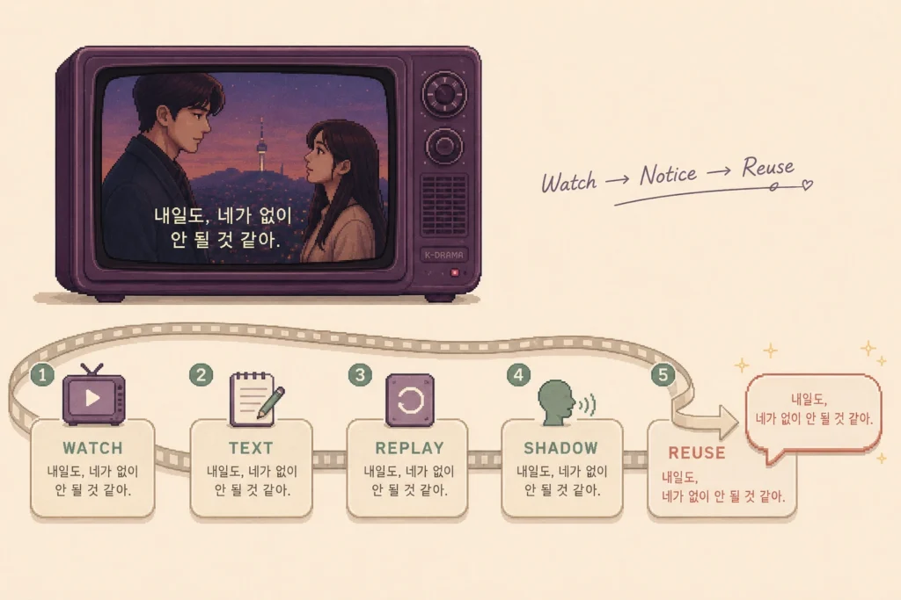
1. Start With a Drama You Actually Like
I would rather study a slightly difficult drama I love than force myself through an “easy” drama I find boring. Interest makes repetition easier because you replay the scene because you actually want to hear it again.
2. Watch First, Study Later
I do not stop every ten seconds during my first watch. I want to enjoy the drama. Later, I return to one scene that caught my attention.
A 60-minute episode is entertainment. A 60-second scene can become study material.
3. Find the Korean Text
I use Korean subtitles, transcripts, or other reliable Korean text whenever possible. Sometimes this reveals that I already knew every word—I simply did not recognize how those words sounded when spoken naturally.
Seeing the Korean reconnects what I heard with what was actually said. If I need to check a word or usage, I also like the Korean-English Learners’ Dictionary from the National Institute of Korean Language.
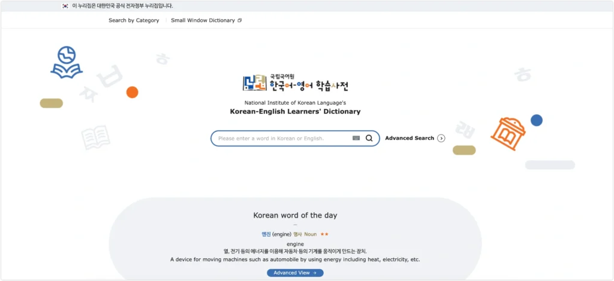
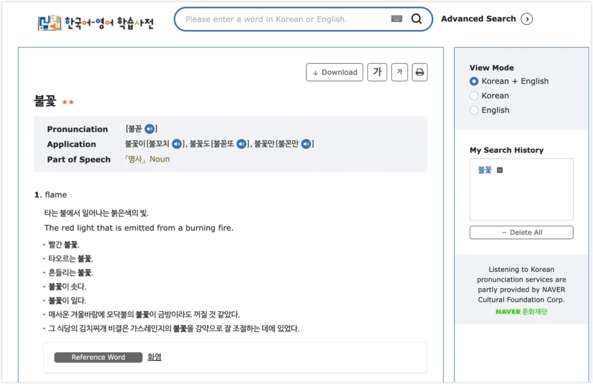
4. Keep Less Vocabulary
I do not try to collect everything anymore. Two or three useful items from one scene are enough.
Before saving something, I ask:
Would I realistically use this with a friend, coworker, customer, teacher, or stranger?
If yes, it may be worth actively learning. If it is police jargon or historical language, understanding it may be enough.
5. Learn the Relationship Too
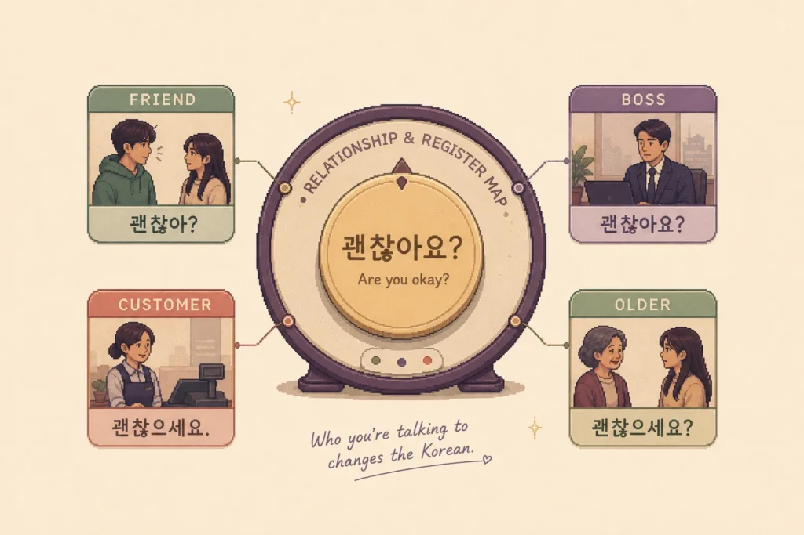
This is one reason I like learning Korean from dramas. Do not save only a word and its English meaning. Add the context around it.
| What to Record | Example |
|---|---|
| Speaker | Employee |
| Listener | Manager |
| Relationship | Junior → senior |
| Register | Formal workplace Korean |
| Situation | Reporting progress |
Korean does not exist separately from relationships. Dramas make those relationships visible.
6. Shadow Short Scenes
I usually keep shadowing short. Twenty to thirty seconds is enough. Listen, repeat, listen again, and then try speaking with the character.
Focus on rhythm, pauses, sound changes, emotion, and sentence endings. A short scene repeated several times is much easier to manage than five minutes of dialogue.
7. Reuse What You Learn
This is the part that matters most. Do not stop at recognition.
Take the verb, adjective, grammar pattern, or collocation and use it in a different situation. That turns drama Korean into your Korean.
📺 The Tool I Use When Studying Korean With Dramas

My K-drama study routine works well, but doing everything manually can get annoying. I may have the drama open in one tab, a dictionary in another, and somewhere else to save the words I want to keep. Every time I switch away from the scene, I lose a little of the context.
That is why I like using Lingopie for this kind of study.
I can watch with Korean and English subtitles on screen, click a word I do not know to check its meaning, listen to the pronunciation, and repeat the line while the scene is still fresh. If the word feels useful, I can also save it directly to My Vocab and come back to it later.
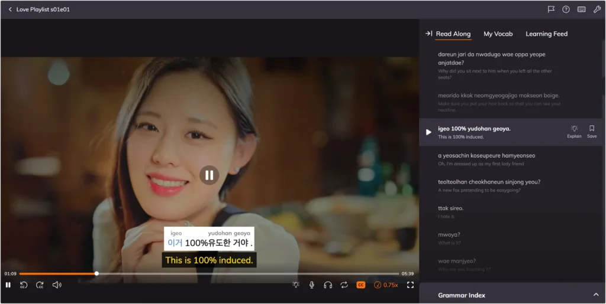
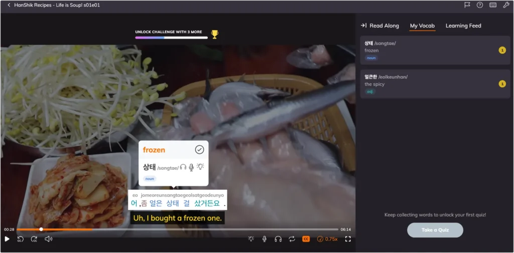
What I like most is how little I have to leave the scene. Instead of separating watching, looking up a word, listening, repeating, and saving vocabulary into different apps, I can do most of that while the dialogue is still in front of me.
That also fits the way I prefer to learn from dramas. I do not try to save every unfamiliar word. If I hear something that sounds useful, I check it, listen again, repeat the line, and decide whether it is worth keeping. Police jargon, historical vocabulary, or highly specialized terms can stay as recognition vocabulary.
For Korean especially, I also like being able to keep the word connected to the original scene. A dictionary definition tells me what a word means, but the drama also shows me who said it, who they were speaking to, how formal the situation was, and what the line sounded like in context.
If you already enjoy learning Korean through dramas, Lingopie is worth testing to see whether this kind of watch-and-study workflow suits you.
💡 Korean Worth Understanding vs. Korean Worth Imitating
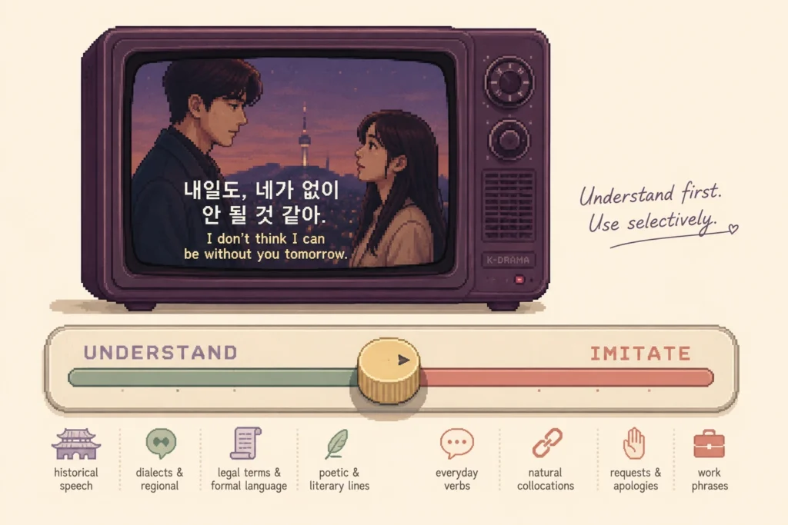
This is one of the filters I use most.
| Usually Worth Actively Learning | Often Better for Recognition |
|---|---|
| Everyday verbs | Historical vocabulary |
| Natural collocations | Legal jargon |
| Requests | Medical terminology |
| Apologies | Military commands |
| Workplace language | Dialect-specific forms |
| Casual reactions | Highly poetic dialogue |
| Relationship vocabulary | Extreme insults |
Both sides matter. They simply serve different goals.
Should You Watch K-Dramas With Korean or English Subtitles?
I use both, because English subtitles and Korean subtitles do different jobs.
| Level | First Pass | Second Pass | Third Pass |
|---|---|---|---|
| Beginner | English subtitles | Korean subtitles | Replay short scenes |
| Intermediate | Korean subtitles | Korean + pause | No subtitles |
| Advanced | No subtitles | Korean subtitles | Shadow + retell |
English subtitles help you understand the story. Korean subtitles help you understand the Korean.
If you still need English subtitles, use them. You can always return to one short scene afterward. Subtitle and audio options can vary by title and region, so it is worth checking the available tracks in your player. Netflix explains its subtitle and audio options in its official help guide.
Can You Really Learn Korean From K-Dramas?
Yes, but I would never say I passed TOPIK Level 6 simply because I watched a lot of K-dramas. I also studied grammar, learned vocabulary, read Korean, practiced listening, and reviewed things deliberately.
What K-dramas did was keep Korean around me for years. They showed me how people react, how formality changes, how textbook grammar sounds at natural speed, and how emotion changes intonation. Because I actually cared about the stories, I kept coming back.
That is why I still think K-dramas are one of the best immersion resources for Korean learners. The useful question is not “How many K-dramas do I need to watch?” It is “What am I doing with the Korean I hear?”
✨ Which K-Drama Should You Start With?
| If you want to learn… | Start with… |
|---|---|
| Everyday Korean | Hometown Cha-Cha-Cha |
| Relationship Korean | Our Beloved Summer |
| Friends and roommate Korean | Hello, My Twenties! (Age of Youth) |
| Real workplace Korean | Misaeng |
| Adult friend-group Korean | Hospital Playlist |
| Family Korean | Reply 1988 |
| Emotional and memorable Korean | Goblin |
| Dialect awareness | Crash Landing on You |
You do not need to study all 20. Pick one you genuinely want to watch, find one scene you love, understand it, find the Korean, replay it, shadow a little, and keep the vocabulary you can actually imagine using.
Then go back to enjoying the drama. That is a Korean study routine I can keep doing for years.
🎁 Free PDF: 200 K-Drama Words Masterclass
If you keep hearing the same Korean words in dramas but never remember how they are actually used, I made a free study guide for that.
200 K-Drama Words Masterclass includes 200 Korean words and expressions across 20 common K-drama scenes, from dating, arguments, work, and family to nightlife, gossip, chaebols, revenge, slang, emergencies, and breakups.
Instead of giving you isolated translations, each entry follows this structure:
Korean → Meaning → Natural Pairing → Natural English
The guide also includes 3 mini-scripts that put the vocabulary back into context and 5 quick quiz questions to check what you remember.
You will find vocabulary for situations including Confessions & Dating, Workplace & Formal Speech, Friends & Casual Chat, Nightlife, Chaebols & Power, Revenge & Betrayal, Slang & Exclamations, Breakups, Marriage & In-laws, and more.
No famous quote collection. No random list of beginner phrases. Just useful Korean vocabulary and natural pairings you can start noticing the next time you watch a drama.
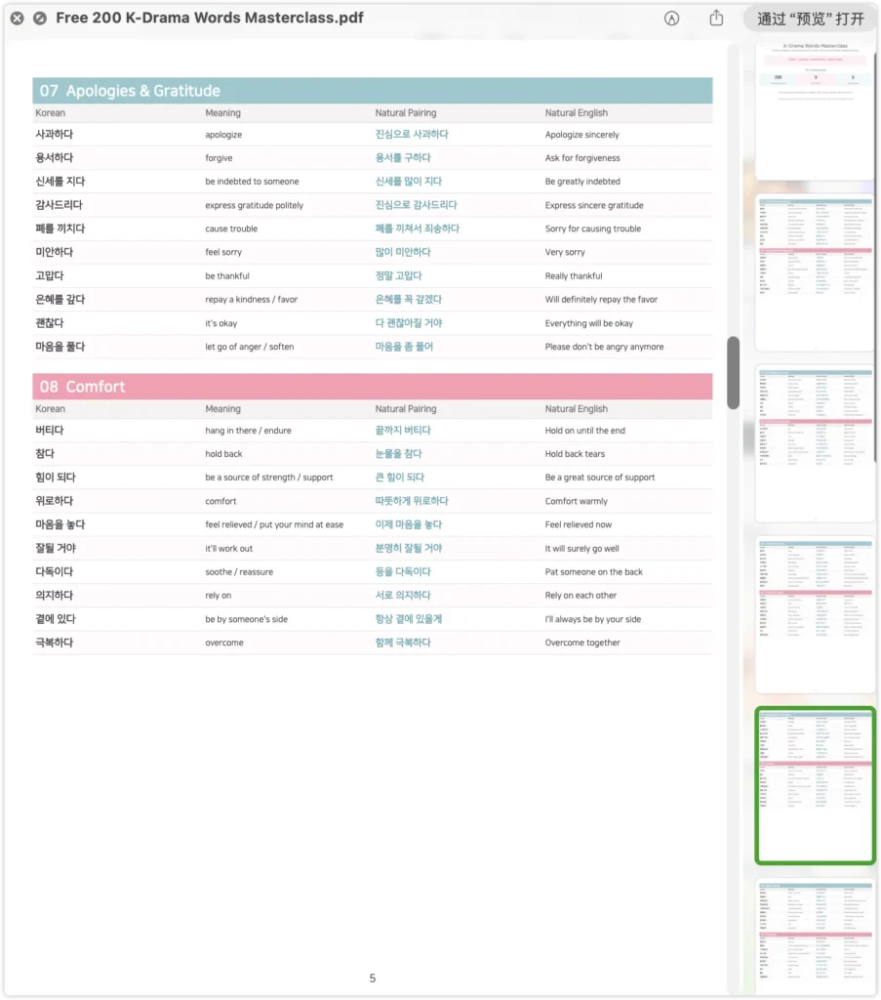
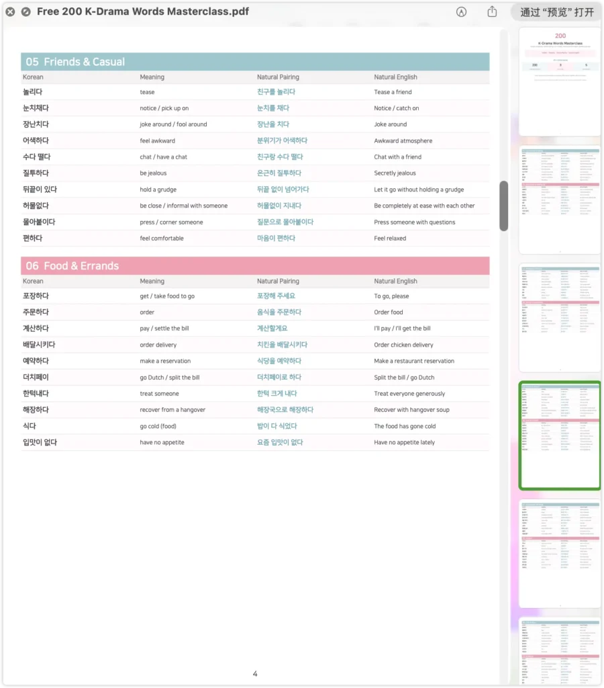
Best K-Dramas to Learn Korean FAQs
What is the best K-drama to learn Korean for beginners?
Hometown Cha-Cha-Cha is my top overall pick because it gives you modern Korean across work, neighbors, family, friendship, and romance. Beginners will still need subtitles, but much of the language transfers well to everyday situations.
Is Our Beloved Summer good for learning Korean?
Yes. It is especially useful for relationship Korean because you hear conversations between former partners, friends, family members, and professional contacts. That makes it good for noticing how casual and polite Korean change with relationships.
Which K-drama is best for learning workplace Korean?
Misaeng is my strongest recommendation for realistic workplace Korean. It shows interns, employees, managers, and clients interacting, so hierarchy and professional Korean become much easier to observe in context.
Can you learn Korean just by watching K-dramas?
K-dramas can improve listening, vocabulary, pronunciation awareness, cultural understanding, and your sense of register. Passive watching alone is unlikely to build balanced Korean ability, so combine dramas with grammar, reading, vocabulary review, shadowing, and active use.
Should beginners watch K-dramas with Korean subtitles?
Yes, but you do not need to abandon English subtitles immediately. Watch for meaning first if necessary, then return to a short scene with Korean subtitles and focus on a small amount of language.
Is Goblin good for learning Korean?
Yes, especially for intermediate and advanced learners who already enjoy the drama. It combines modern everyday Korean with more poetic and fantasy-specific language, making it useful for both listening practice and register awareness.
Is Crash Landing on You good for learning Korean?
It is particularly useful for stronger learners because it exposes you to both South Korean and North Korean speech. Standard South Korean scenes are better for active imitation, while North Korean scenes work well for recognition and comparison.
What type of K-drama is easiest for Korean learners?
Modern slice-of-life, romance, campus, and light workplace dramas are usually the easiest starting points because they contain familiar situations and more vocabulary that transfers to everyday life.
The difficulty ratings in this guide are personal learning estimates, not official TOPIK classifications. Streaming availability and subtitle options may vary by region.